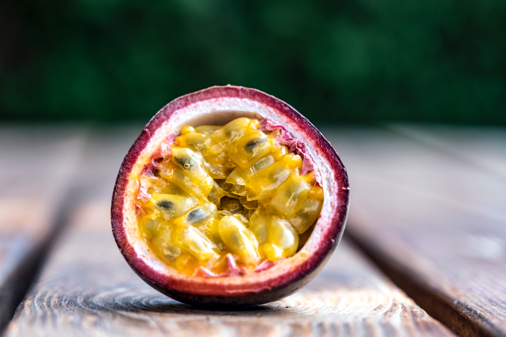
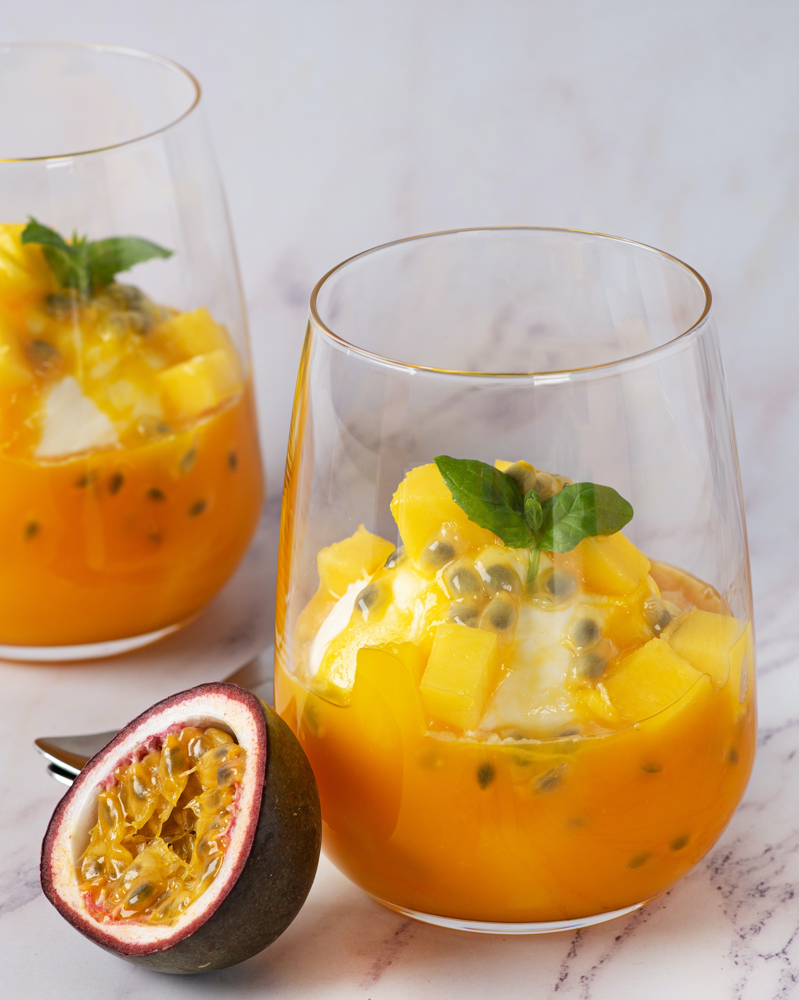

最新消息
開幕大特價
免運
百香果營養價值
送貨問題
銷售產品
百香果以其獨特的酸甜口感而聞名，果肉帶有微酸的風味，結合了清新的果汁和微酸的滋味，為口腔帶來美妙的感受。

百香果汁帶有一種清新涼爽的口感，這與其他果汁有所不同，給人一種清爽的感受。
百香果本身帶有微酸的風味，這種微酸帶來一種清爽的口感，令人回味。

我們的社群平台
空間利用率高：
吊網種植百香果可以垂直向上生長，有效利用空間，特別適合城市或有限空間的農場。
方便管理和收成：
吊網種植使得植株的管理更為便利，包括修剪、施肥、澆水和採摘。由於果實懸掛在吊網上，採收也更容易，無需彎腰或使用梯子。
減少病蟲害和病菌感染：
吊網種植方式有助於減少病蟲害的傳播，因為植株離地面較高，減少了接觸土壤或地面可能帶來的病菌感染的機會。
果實保持整潔和品質良好：
百香果懸掛在吊網上，不易受到接觸地面或受損的情況，果實保持整潔，有利於保持其品質。